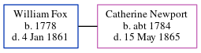

William Fox 1778 - 1861
[ Home ] | [ Calendar ] | [ Surnames Index ] | [ Errors ] | [ Family History ]William Fox, the husband of Catherine Newport (the four times great-aunt of Nigel Horne), was born in Elham, Kent, England in 17781. He married Catherine on St Mary the Virgin, Vicarage Lane in Elham on 26 Nov 18033. On 30 Mar 1851, he was living at Butter Street, Sibertswold, Kent, England1.
He died on 4 Jan 1861 in Dover, Kent, England2 and was buried in Sibertswold on 7 Jan 1861.
Citations
- 1851 England, Wales & Scotland Census - Findmypast (was age 69 and the head of the household)
- England & Wales deaths 1837-2007 - Findmypast
- England Marriages 1538-1973 - Findmypast
Media
Kent, Canterbury Archdeaconry marriages 1538-1928 - GBPRS/CANT/M/97156207/2
1851 England, Wales & Scotland Census - GBC/1851/0005959457
England & Wales deaths 1837-2007 - BMD/D/1861/1/DM/000180/038
Family Tree
Map
Generated by ged2site. Last updated on Jul 3, 2024
Known Issues
Burial date (7 Jan 1861) has no citations